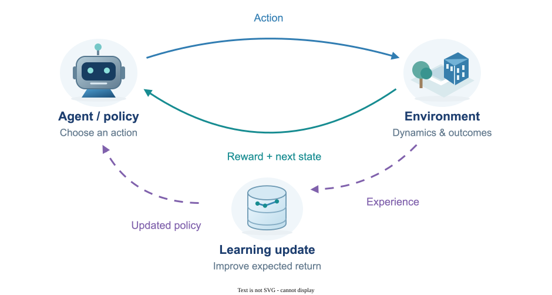

Reinforcement Learning
Reinforcement learning studies how an agent learns to make decisions by interacting with an environment and receiving rewards. The goal is to discover a policy that performs well over time, balancing immediate gains with long-term outcomes. My work explores fair decision-making in multi-agent systems, efficient action selection, multi-objective planning, and flow-based policies for learning from offline data.
System Diagram

My publications on this area
Peer-Reviewed Conference Papers
-
Fairoz Nower Khan, Nabuat Zaman Nahim, Ruiquan Huang, Haibo Yang, and Peizhong Ju,
"Flow Matching for Offline Reinforcement Learning with Discrete Actions,"
40th Conference on Neural Information Processing Systems (NeurIPS'26), 2026 (accepted).
arXiv version
NeurIPS
@inproceedings{khan2026flowmatchingofflinereinforcement, title={Flow Matching for Offline Reinforcement Learning with Discrete Actions}, author={Fairoz Nower Khan and Nabuat Zaman Nahim and Ruiquan Huang and Haibo Yang and Peizhong Ju}, booktitle={Advances in Neural Information Processing Systems}, year={2026}, note={Accepted}, url={https://arxiv.org/abs/2602.06138} } -
Ashutosh Soni, Peizhong Ju, Atilla Eryilmaz, and Ness B. Shroff,
"An LP-based Sampling Policy for Multi-Armed Bandits with Side-Observations and Stochastic Availability,"
24th International Symposium on Modeling and Optimization in Mobile, Ad hoc, and Wireless
Networks (WiOpt'26), 2026
IEEE Xplore
@inproceedings{soni2026lp, title={An LP-based Sampling Policy for Multi-Armed Bandits with Side-Observations and Stochastic Availability}, author={Soni, Ashutosh and Ju, Peizhong and Eryilmaz, Atilla and Shroff, Ness B.}, booktitle={International Symposium on Modeling and Optimization in Mobile, Ad hoc, and Wireless Networks (WiOpt)}, year={2026} } -
Yining Li, Peizhong Ju, and Ness B. Shroff, "How to Find the Exact Pareto Front for
Multi-Objective MDPs?"
13th International Conference on Learning Representations (ICLR'25).
spotlight
arXiv version
ICLR
@inproceedings{ li2024find, title={How to Find the Exact Pareto Front for Multi-Objective {MDPs}?}, author={Yining Li and Peizhong Ju and Ness B. Shroff}, booktitle={The Thirteenth International Conference on Learning Representations}, year={2025} } -
Peizhong Ju, Arnob Ghosh, and Ness B. Shroff,
"Achieving Fairness in Multi-Agent MDP Using Reinforcement Learning," 12th
International
Conference on Learning Representations (ICLR'24), 2024.
arXiv version
ICLR
@inproceedings{ ju2024achieving, title={Achieving Fairness in Multi-Agent {MDP} Using Reinforcement Learning}, author={Peizhong Ju and Arnob Ghosh and Ness Shroff}, booktitle={The Twelfth International Conference on Learning Representations}, year={2024}, url={https://openreview.net/forum?id=yoVq2BGQdP} } -
Yining Li, Peizhong Ju, and Ness B. Shroff,
"Achieving Sample and Computational Efficient Reinforcement Learning by Action Space Reduction via
Grouping," 12th
International
Conference on Learning Representations (ICLR'24), 2024.
arXiv version
ICLR
@inproceedings{liachieving, title={Achieving Sample and Computational Efficient Reinforcement Learning by Action Space Reduction via Grouping}, author={Li, Yining and Ju, Peizhong and Shroff, Ness}, booktitle={The Twelfth International Conference on Learning Representations}, year={2024}, url={https://openreview.net/forum?id=MOmqfJovQ6} }
Journal Papers
-
Nabuat Zaman Nahim, Fairoz Nower Khan, and Peizhong Ju, "A Survey of Flow Matching in
Reinforcement Learning," Transactions on Machine Learning Research (TMLR), 2026.
Survey Certification
paper
arXiv version
@article{nahim2026survey, title={A Survey of Flow Matching in Reinforcement Learning}, author={Nahim, Nabuat Zaman and Khan, Fairoz Nower and Ju, Peizhong}, journal={Transactions on Machine Learning Research}, year={2026}, url={https://openreview.net/forum?id=P6e5IC4gPe} }
Pending Papers
- Fairoz Nower Khan, Nabuat Zaman Nahim, and Peizhong Ju,
"Discrete Flow Matching for Offline-to-Online Reinforcement Learning."
arXiv version
@misc{khan2026discreteflowmatchingofflineonline, title={Discrete Flow Matching for Offline-to-Online Reinforcement Learning}, author={Fairoz Nower Khan and Nabuat Zaman Nahim and Peizhong Ju}, year={2026}, eprint={2605.12379}, archivePrefix={arXiv}, primaryClass={cs.LG}, url={https://arxiv.org/abs/2605.12379}, }
Explore Machine Learning
- Reinforcement Learning
- Federated Learning
- Continual & Transfer Learning
- Diffusion & Flow Matching
- Interpretability & Generalization